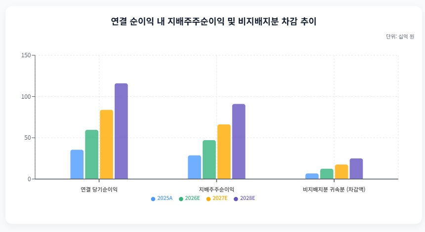
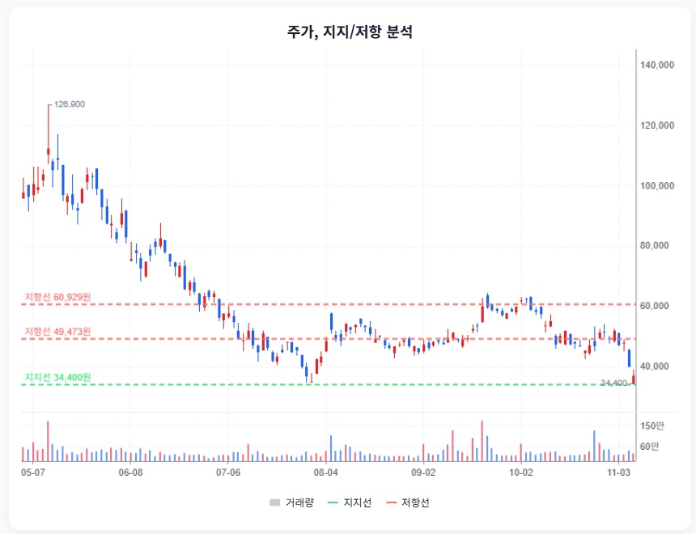

RFHIC · StockEasy 읽기용 정리
첨부 확인 2026-11-08 · 핵심 내용을 문단별로 재구성했습니다. 원문 전체 전사가 아니며, 차트는 첨부 화면에서 발췌했습니다. 원문의 매수·매도 표현과 가격 구간은 자동 매매 신호로 채택하지 않았습니다.
1. 좋은 분기와 반복 가능한 이익을 구분하기
StockEasy 원문 요약 · 주장과 가정 포함
원문은 3분기 매출 711억원·영업이익 217억원의 호조에 이연된 레이시온 출하가 포함됐다고 설명합니다. 이연 매출 150~170억원·관련 이익 50~60억원을 제외한 정상 영업이익을 155~165억원으로 제시합니다.
4분기는 국내 방산 비중 증가로 매출이 커져도 마진이 낮아질 수 있다는 관점입니다.
2. EPS에서 비지배지분을 두 번 빼지 않기
StockEasy 원문 요약 · 주장과 가정 포함
원문은 2027년 연결 순이익 838억원에서 비지배지분 176억원을 뺀 지배주주 이익 662억원, EPS 약 2,491원을 제시합니다. 통신 회복이 없으면 EPS 1,994~2,069원이라는 별도 가정도 제시합니다.

StockEasy 원문 발췌 · 연결/지배 순이익 구분. 2026~2028년은 외부 전망이며 수치별 직접 대조 미완료.
3. 수주 금액보다 검수와 현금 회수가 중요
StockEasy 원문 요약 · 주장과 가정 포함
원문은 레이시온 506억원·콜린스 221억원·LIG 관련 192억원을 합쳐 919억원의 계약을 설명하며 2027년 초 납기와 검수 지연을 주요 위험으로 꼽습니다.
재고·매출채권 증가, 분기 영업현금흐름 변동, 연간 CAPEX 약 250억원을 함께 점검합니다.
4. 3만원대가 바닥이라는 근거는 아직 별도 검증
StockEasy 원문 요약 · 주장과 가정 포함
원문 시나리오는 보수적 30,480원(EPS 2,032원×15배), 중립 44,856원(2,492원×18배), 낙관 64,575원(2,583원×25배)입니다.
추가 수주 공백·통신 회복 지연·검수 지연·현금흐름 악화가 저평가 논리를 약화시키는 조건입니다.
5. 차트의 지지선은 가치 바닥과 다릅니다
StockEasy 원문 요약 · 주장과 가정 포함
원문은 34,400원 지지와 49,473원·60,929원 저항을 제시하며 추세 회복보다 지지 유지 확인이 먼저라는 관점을 담고 있습니다.

StockEasy 원문 발췌 · 첨부 당시 주가/지지·저항. 현재 시세가 아닙니다.